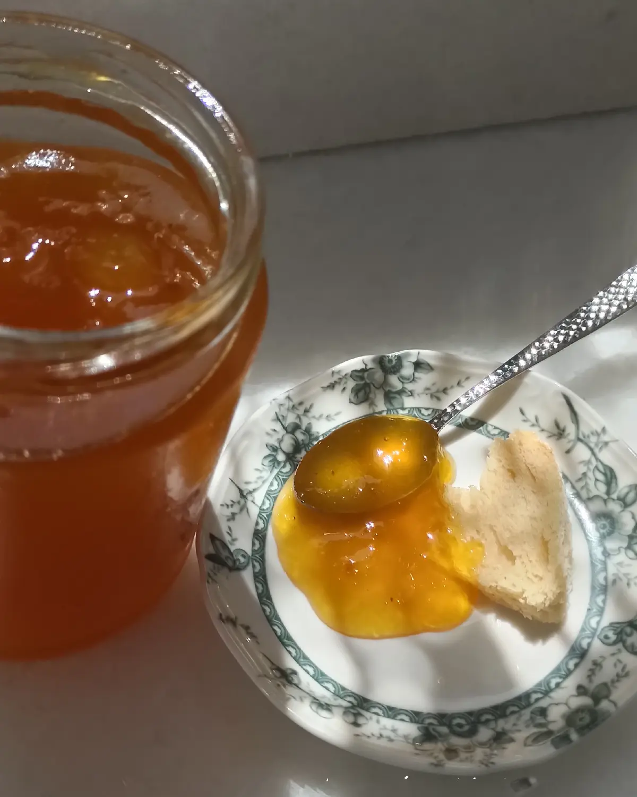

Three
Marmalade
At La Maison Vert Amande we are fortunate to have many different fruit trees. Our fruit and vegetables are grown in an environmentally friendly way, without pesticides. The farm is a small, family-run business, and the jams are made using traditional methods — a simple pleasure for a special moment.
Far removed from industrial techniques, I make my jams by hand. I select the fruit with care, sort it meticulously, stone it exclusively by hand and cut it up one by one with a knife. I process the fruit in small batches and cook it in a traditional copper pot.
My jams are made from 100% fresh fruit harvested that very day, with no added preservatives, gelling agents, flavour enhancers or colourings. A quick cooking method, only a few kilos at a time, preserves the flavour, colour and texture.
The amount of sugar is determined by each fruit or fruit mixture. I use white sugar, the purest and most neutral, so only the fruit's own aroma comes through. The jams are very lightly sweetened and bottled while still hot, in jars sterilised at 200°C. As they are guaranteed preservative-free, keep them in the fridge once opened.